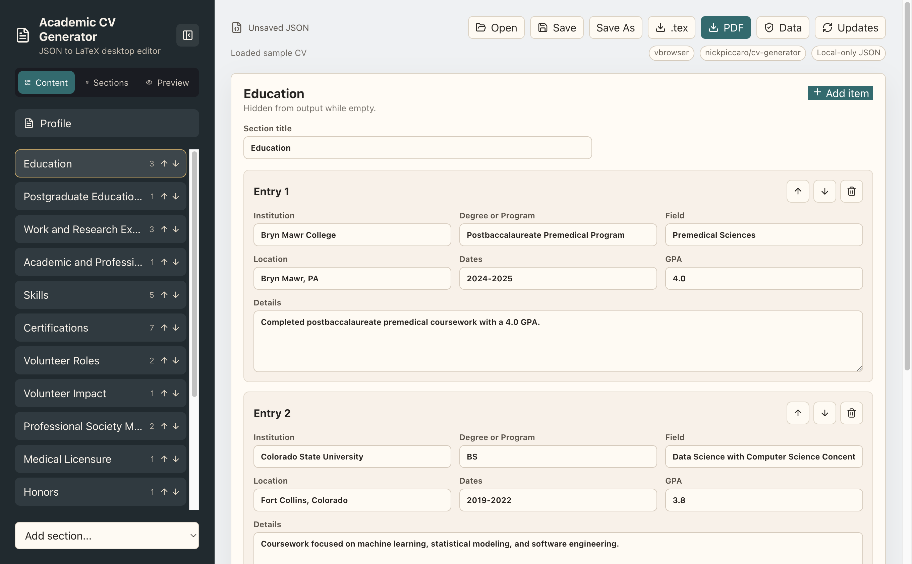

macOS Apple Silicon
For M1, M2, M3, and newer Macs.
Download DMGPrivate desktop CV editor
Build a structured academic medicine CV from local JSON, reorder sections, and export clean LaTeX or PDF without sending personal data to a server.

Installers
Looking up the latest GitHub release...
For M1, M2, M3, and newer Macs.
Download DMGFor older Intel-based Macs.
Download DMGFor most Windows 10 and Windows 11 PCs.
Download EXEFor ARM-based Windows devices.
Download EXESecurity model
CV JSON is stored in the standard per-user app data directory on macOS and Windows, not in a shared program folder.
The app does not use analytics or cloud storage. Update checks read public GitHub release metadata only.
Electron runs with context isolation, no renderer Node access, a restrictive content security policy, and validated IPC calls.
The packaged app checks GitHub Releases on startup and can defer update reminders for 30 days.